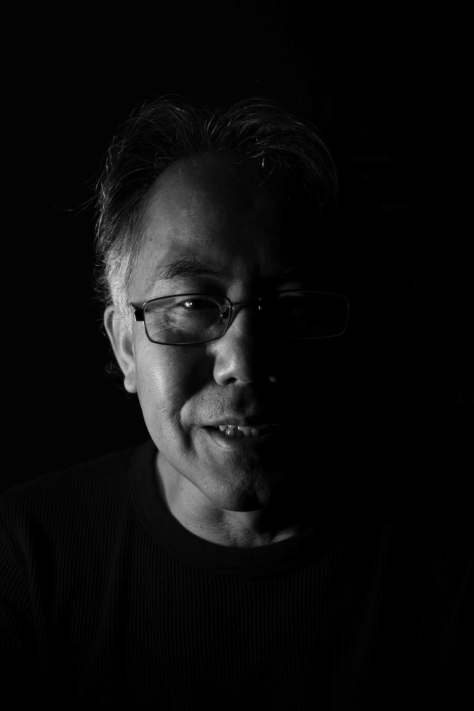

Listen to this page:
Guoyi is a researcher focusing on water, climate change and disaster risk reduction, particularly focusing on the role of China.
"Frustrated"

Despite his calm presence, he describes at length how frustrated he is with the state of the planet and humanity’s poor response: “you keep hearing the same message again and again, but mistakes keep being made”. He tells me of his frustrations with the way that China is described – confrontational and accusatory – “any solution has to involve China!”. But he manages to stay calm by an inherent belief that perhaps there is some logic to the way things are. This calmness, he tells me, can perhaps be traced back to his Taoist roots, and he explains an old Chinese adage about the sky falling that reflects the benefits of not worrying about things outside your control.
"Disastrous"

Some experts believe that the most likely outcome for humanity will be very narrowly escaping total disaster, he tells me: “and we are already entering a time where we are seeing all kinds of disasters”. Again, he tells me that he takes comfort from the fact that we may need such disaster to get to a tipping point where things are forced to change.
"Faithful"

He tells me that we just need to have faith that we will pull through. He takes motivation from finding his own meaning in what he does, working towards open dialogue and trying to understand one another: “sometimes, we’re too wrapped up in whether we are making a difference. But as long as I see meaning in what I do, that’s good enough motivation for me to get up every day and do it.”
He tells me he feels hope – that it is implicitly encompassed in faith: “this enduring power of human survival – that’s where my hope lies.”

Visit the project website